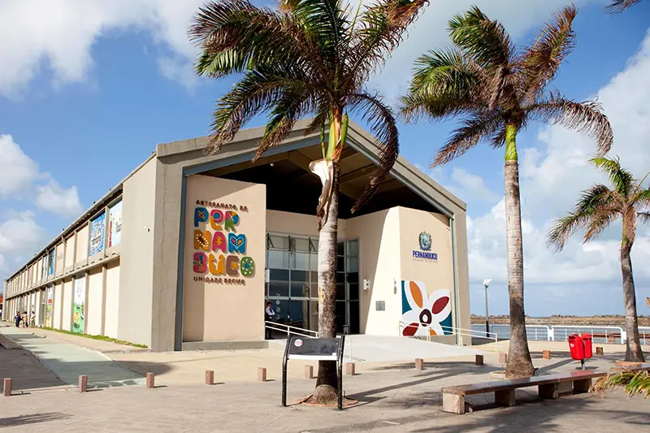

Seja bem-vindo no Recife-PE.
MUSEU CAIS DO SERTÃO.

Cais do Sertão.
PRESTANDO HOMENAGEM À CULTURA, ÀS HISTÓRIAS E AO POVO SERTANEJO BRASILEIRO.
Moderno e interativo, o Museu Cais do Sertão coloca lado a lado a vida simples do povo sertanejo com a tecnologia. O resultado é um primor! Toda a riqueza do Sertão Nordestino é revelada por meio de peças, fotografias, textos e música. O Museu ocupa um antigo armazém do porto, ao lado do Centro de Artesanato de Pernambuco, que fica por sua vez, ao lado do Marco Zero. Dá para fazer tudo isso a pé, tranquilamente. Eles ficam literalmente lado a lado.
CENTRO DE ARTESANATO.
Centro de Artesanato.
Os antigos armazéns portuários que ficam ao lado do Marco Zero foram transformados em espaços voltados para o turismo. Um deles é o Centro de Artesanato de Pernambuco.
Esse ponto turístico de Recife funciona em dois sentidos: é uma grande galeria que expõe as obras dos artesãos e artistas de todo o estado e também uma central de vendas, pois você pode comprar tudo o que está exposto no local.